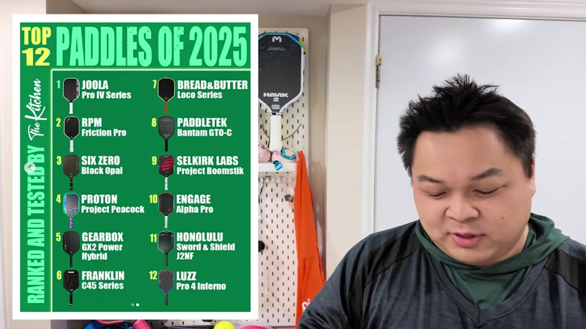
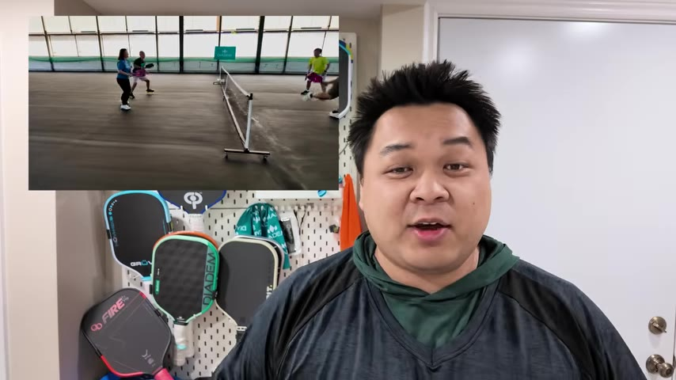

A pickup-ball reviewer and coach with over two years in the sport went on a recorded rant about the pickleball paddle review industry — brands demanding sales quotas, reviewers using AI to write scripts, and the 5-hour break-in rule that makes most YouTube reviews dishonest.
Watch on YouTubeSuper Senpai — real name Sam — is a part-time pickleball coach in Ontario who has reviewed paddles for over two years. His channel started as a gaming YouTube channel (he was known for being first to beat game updates), and he transitioned to pickleball after falling in love with the sport and its technology. He reached out to hundreds of companies with one condition: he gets to be brutally honest. He doesn't show affiliate codes upfront because this is a passion project — his students across Ontario are who he's writing for.
I don't ever show off my affiliate codes because I think this is a passion project. I love doing this.— Super Senpai
Sam's honesty has had consequences. Brands have cut him off, ignored his outreach, or imposed conditions. Ariel — praised online as "the best pickleball paddle to date" — gave him a $128 brokerage fee for improper labeling, then demanded he sell five paddles before they'd send him a new one. Selkirk's ambassador contract banned all negative commentary, required six demo days with five attendees each, and forced a $2,000 sales referral target. Fail the benchmarks and you return everything.

If you're not going A+, I don't want you to review me.— Super Senpai
Publication paddle lists from outlets like The Kitchen and Duper are among the most problematic. The Kitchen co-founder Jason Anpes is now president of UPA — when brands put serious money into UPA, the wildcard paddles at the top of their lists tend to be those brands'. The Kitchen's #1 paddle is literally the only one they sell. Duper's list conveniently features only paddles available at Pickleball Central, their connected store.
These are not review lists. These are paddle lists that my friends I need to support.— Super Senpai
The ULA CF3 still ranks in the top three for 2026 despite known durability issues. Black Opal appears in multiple "top" lists despite being widely regarded as difficult to use. Radical ranks higher than any player-tested consensus supports.
Modern foam paddles take over 5 hours of gameplay to properly break in. Standalo told Sam their Absolute Black paddle was wrong out of the box — after six hours it became "what it actually is." This pattern repeats: Koda 2, Blade 2, Cyclone — all different out of the box, transformed after proper break-in.
You can't know what a paddle is until you break it in.— Super Senpai
How to tell if a reviewer is using AI to write their script: they talk more about specs than performance, use unusually complex language to describe how a paddle plays, or get the specs wrong (AI hallucination). A genuine reviewer talks simply, shows clips of actual play, and demonstrates how different people respond to the same paddle.
Sam tests through 20+ players at his club across different ages, demographics, and skill levels. He watches drives, dinks, serves, smashes, and recovery — not just the paddle feel, but the player's body and enjoyment. His review isn't based on one person's opinion; it's the aggregate of dozens of players who just want to have fun.

Can a reviewer have a soft spot for a brand? Yes. Sam acknowledges his soft spot for Dynamics Blue Card — they sponsored his wedding and gave him early access. But he still critically notes it's offense-oriented and trickier on defense. A good reviewer finds pros and cons regardless.
Brands that genuinely appreciate reviewer feedback — Crush, Grooveon, 11624, Apollo, Buma, Combat Paddles, Grit, 182Rports, Gear Strike, Warping Point, Alpha, Mavericks, Flick, Bolair, Element 6, Daidem — share their videos, appreciate feedback, and actually use reviewer input to build their next paddle.
That's what I do. I hope you keep watching my videos because I know I'm always going to be honest with my reviews.— Super Senpai
:::